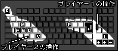

ぎょっ
動作環境：たぶん、java1.1辺りです。
IE6に元から付いてるMicrosoft VMのjavaのJITコンパイラで動作確認しましたが、ちょっと不安定です。うんこです。出来れば最新のJavaのランタイムをインストールして下さい。
ランタイムDL先:http://www.java.com/ja/download/
IE6に元から付いてるMicrosoft VMのjavaのJITコンパイラで動作確認しましたが、ちょっと不安定です。うんこです。出来れば最新のJavaのランタイムをインストールして下さい。
ランタイムDL先:http://www.java.com/ja/download/

|
プレイヤー1の操作
|
プレイヤー2の操作
|
特殊な操作
|
|
ショット：Enter
移動：←↓→↑
ポーズ：P
|
ショット：V
移動：A S D W
ポーズ：ESC
|
頭飛ばし & 戻し：ショットを素早く2回押す
|